广告实操手册 · Codex 版
从一份广告报表，到一张有人点头、有日期、能复盘的动作清单。全程不花钱，不用任何付费接口，不连广告后台。
| 谁干 | 干什么 |
|---|---|
| 脚本 | 算账、对目标找异常、按规则出动作、验证器、写状态库、出报告 |
| AI（Codex） | 读搜索词做语义分组；事实、推断、未知分开写；摆选项和代价；起草行动卡 |
| 你 | 填目标和约束、定分组规则、做取舍、逐条确认或驳回、去后台执行、到日子复盘 |
先认识页面（1 分钟）
页面按「你来这里要干什么」分成六页，左侧导航直接跳。右上角从左到右：当前身份（老板／广告运营／供应链，权限不同）、跑一圈。课上那张图的六层（发现 → 分析 → 诊断 → 动作 → 审批 → 执行）没有消失：它是「行动」里每一类动作上的那条进度线，和「原因」页的那张树。
| 页 | 来这里干什么 | 谁在动 |
|---|---|---|
| 首页 | 今天要我处理什么：待办按影响排，一条一个按钮；下面是「先算账」（目标 TACOS、每天能花多少、卡在哪、走哪条路）、目标、六张指标卡、这周的结论 | 你看、你点 |
| 行动 | 拍板和跟进：待你决定 → 待执行 → 等验证；左边选一类，右边看进度线、建议、依据、逐条明细；通过／驳回（必填理由）／整类通过；导出批量上传表 | 你点头，人去后台 |
| 广告活动 | 查一个 Campaign：它背的任务、花费、ACOS、日预算；点进去确认任务，看竞价策略和它的广告组、广告产品、关键词或定位、否定，和这一圈要在它上面改什么 | 看 |
| 原因 | 两个页签。经营拆解：指标树、卡在哪、四条利润路径、九栏决策表。问题连线：问题 → 分析 H1～H6 → 对策 A～E → 动作；对策打勾＝这一圈做不做 | AI 分析、脚本算数、你取舍 |
| Agent 运行 | 三个页签。这一圈：六个格子、持续运行、运行历史、操作记录、行动卡九格。每周自己跑：周跑记录、模型补位、周报草稿。它的构成：围住它的七样东西、谁写什么、技能包 | Agent；下一圈先读回 |
| 设置 | 大部分时候不用来：目标与经营口径、Agent 接通状态、口径（阈值）、数据有没有给全、动作交给谁执行、谁能做什么、演示模式、重置 | 你 |
第一轮 · 用示例跑通（约 40 分钟，人人都做）
开工前检查约 2 分钟
电脑上要有三样：Codex、Python 3（3.9 以上）、一个浏览器。工作台只用 Python 标准库加 pandas，不装别的。
帮我检查这台电脑有没有 python3 和 pip，各是什么版本；再检查 python3 能不能 import pandas。缺哪个告诉我怎么装，先别动手装。
应该看到python3 报出版本号（3.9 以上都行），pandas 能导入。
卡住了
缺 pandas：让它执行 pip install pandas（报权限错就加 --user）。Windows 学员：把后面所有 python3 都当成 python，其余一样。
把工作台拿下来、跑起来约 5 分钟
不要放在「桌面」或「文稿」下面，Mac 会拦着后台进程不让读那里的文件。
做三件事： 1. 把 https://github.com/WaytoAIC/ads-workbench 克隆到 ~/ads-lab 2. 确认 ~/ads-lab 里有 工作台/app.py、_脚本/、_原始拉取/、参数.json、分组规则.json 3. 在 ~/ads-lab 下启动 python3 工作台/app.py，告诉我浏览器该打开哪个地址 启动后这个进程要一直开着，别关；它只监听本机，不联网。
应该看到它报出 http://localhost:8810。浏览器打开：左边一条深色导航（首页、行动、广告活动、原因、Agent 运行、设置），顶栏写着任务状态「R-001 · 待处理」，右上角是身份切换和蓝色的「跑第一圈」；页面中间一张卡「任务 R-001 已建好，还没跑过」。Mac 学员也可以直接双击仓库里的「启动工作台.command」。
卡住了
报 Address already in use：让它加 --port 8811 再起，地址跟着换。报 Operation not permitted：仓库放在了桌面或文稿下，挪到 ~/ads-lab 再来。页面空白：等两秒刷新；还空白就看终端有没有红字，贴给 Codex。
跑第一圈，看六个格子约 3 分钟
数据是脱敏并替换过品类的演示数据（浴室防滑垫），Campaign、广告组、ASIN、SKU 都是按真实格式生成的脱敏值；不连任何广告后台，「跑一圈」只读本机文件。
点右上角「跑第一圈」。
应该看到页面自己跳到「Agent 运行」，六个格子依次亮起：① 读取状态 → ② 判断下一步 → ③ 执行 → ④ 验证 → ⑤ 写入状态 → ⑥ 判断停止条件，一秒左右跑完。② 写「首次运行 → 跑 v1」；③ 写「读报表 → 分组账 → 异常 → 89 条动作 → 行动卡 → 报告」；④ 写「验证器 9/9 项通过」；⑥ 写「停在「待核对」，等人处理 89 条动作」。跑完一秒多，页面自己回到首页，顶栏状态变成「R-001 · 待核对 · v1」。它跑完就停，不会自己再动。
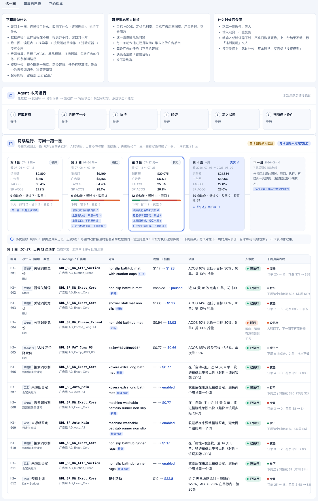
「Agent 运行」页的「这一圈」页签：三张说明卡（它每周做什么、哪些事必须人拍板、什么时候会停）、这一圈的六个格子、持续运行时间线。点任何一格能展开细节。另外两个页签第三轮再看。
把 ~/ads-lab/工作台/app.py 里 _loop 这个函数的六步，用大白话一步一句讲给我听。然后指出：哪一步是它自己不做、留给人做的；哪两种情况下它会在第 2 步就停下来。
应该看到它能说出第 6 步是停下等人；两种停：没有待处理的任务、缺输入。
卡住了
某一格变红：点开那一格看原因，把原话贴给 Codex 问怎么办。多半是终端里的进程被关了。想再看一遍六格：左侧点「Agent 运行」。
首页：今天要我处理什么约 4 分钟
首页只回答一个问题。最上面一张卡「需要你处理的事」，按对生意的影响从大到小排，每条一个按钮。往下是深色的「本周广告数据」（右边三个数是人定的目标）、六张指标卡、「这周的结论」。
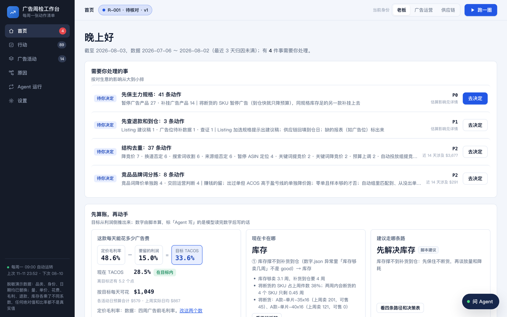
跑完第一圈的首页：四件事等你决定，一条一个「去决定」。
应该看到四条「待你决定」：先保主力规格 41 条动作（P0）、先查退款和到仓 3 条（P1）、结构去重 37 条（P2）、竞品品牌词分拣 8 条（P2）。「这周的结论」里：「库存够卖几周」红色「严重」——3.1 周小于补货要的 4 周；「退款率」橙色「要管」；「同一批词被几个活动重复买」约七成，黄色「留意」；「SP 的 ACOS」「TACOS」「泛词＋跑偏词」收在「另有 3 项正常」里，泛词只占花费 4.5%。没有目标，就没有问题；你以为的问题（跑偏词）不是问题。
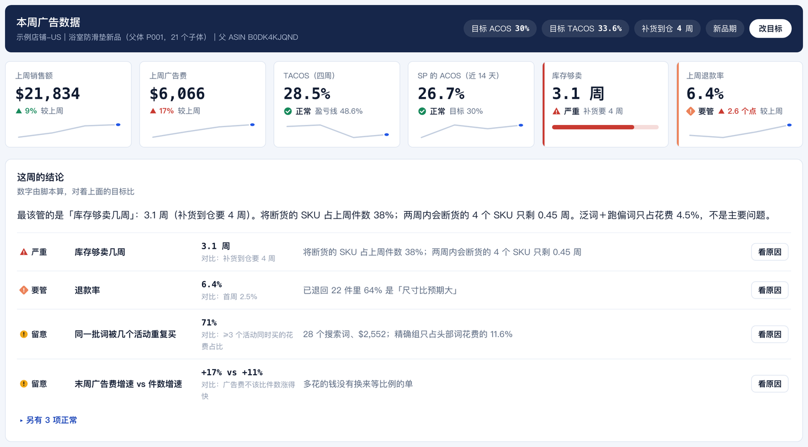
首页下半：人定的三个目标、六张指标卡、这周的结论。每条问题右边有「看原因」。
读 ~/ads-lab/广告闭环/输出/数字.json 里「异常」这一段，用大白话告诉我：每一条是拿哪个数、对着哪个目标比出来的？哪一条和「补货到仓周数」这个输入有关？如果目标 ACOS 从 30% 改成 20%，哪一行会变色？
应该看到它指出库存那一行用的是到仓周数；目标 ACOS 改成 20% 后「SP 的 ACOS」会从正常变成留意。
卡住了
它凭印象讲：让它「去文件里读，把数念给我听」。
原因：从一个问题走到动作约 6 分钟
在「这周的结论」里，点「库存够卖几周」右边的「看原因」。
进到「原因」页，一张四列的树：发现的问题 → 分析（H1～H6，一个问题可以拆成几问，一问也可以来自几个问题）→ 对策（A～E）→ 动作（按类型分好，带执行通道和待审批数）。点任何一个节点，它的上下游会高亮，别的变淡，下面是结论和证据。
点分析列的 <b>H1「断货的规格还在被广告买流量吗？」</b>。
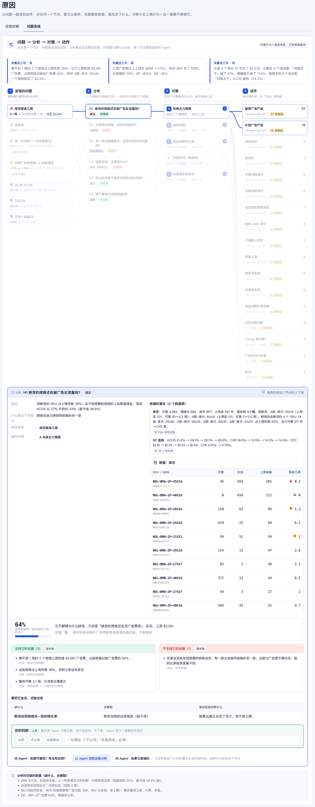
点 H1 后：高亮的是它的上下游；下面左边是结论和「什么情况下不成立」，右边两条事实各标了数据源，再往下是按 SKU 的库存表。
应该看到H1 判定「成立」：将断货的 SKU 占上周件数 38%，等效 ACOS 会从 27% 升到约 43%；不成立的情况是「顾客会自己换到同规格的另一款」。库存表里销量最大的规格反而最先断货（够卖 0.2 周、0 周）。树最下面还有一块「分析时还缺的数据」：到仓日要问供应链，自然排名要付费工具。
原因页里 H3「同一批词被重复买，是竞价结构的问题吗？」的依据是哪几条事实？它自己写的「不成立的情况」是什么？如果我是老板，要去问谁才能把它变成事实？
应该看到它能指回事实的编号，说出要去问运营（竞价是不是有意为之）。事实、推断、还缺什么，分开写。
卡住了
树上连线没画出来：窗口太窄；拉宽浏览器或刷新。
对策：做一次取舍约 3 分钟
还在「原因」页。对策列的五张卡＝五条路：A 先保主力规格、B 结构去重、C 竞品品牌词分拣、D 只做否词（粗规则）、E 先查退款和到仓。卡右上角的勾＝这一圈做不做它；点卡本身看它做什么、代价、什么时候该选、可逆吗。
点 D 卡右上角的勾（只有老板能改）：标题栏出现「取舍改成 A · B · C · D · E」和「按这个取舍重新生成」。今天不要点重新生成，点「放弃」。然后点 D 卡本身，读它的代价。
应该看到D 的代价：近 14 天最多省 $162（占花费 4.5%）；回测里粗规则标出的 4 个词，3 个后来出了单。本轮它没选，所以动作列里没有「粗规则否词」这一类。
读 ~/ads-lab/广告闭环/输出/选项.json，把五条路按「能省或能保多少钱／风险多大／可逆吗」列成一张表。然后回答：如果只能做一件，数据更支持哪一件？说完理由，但最后由我定。
应该看到一张五行表；它多半推荐 A（库存），并说明这是建议不是决定。取舍是人的。
行动：当一回运营约 6 分钟
回首页，点第一条「先保主力规格」右边的「去决定」。
进到「行动」页的「待你决定」。左边是按动作类型分的列表，右边是选中那一类的详情：一条进度线（发现 → 分析 → 决定 → 执行 → 验证，现在停在「决定」）、「建议怎么做」（Agent 写的，带代价）、「怎么算成功」、一个主按钮「按建议全部通过」，最下面是逐条明细：改哪个对象、在哪个 Campaign、从多少改到多少、依据。
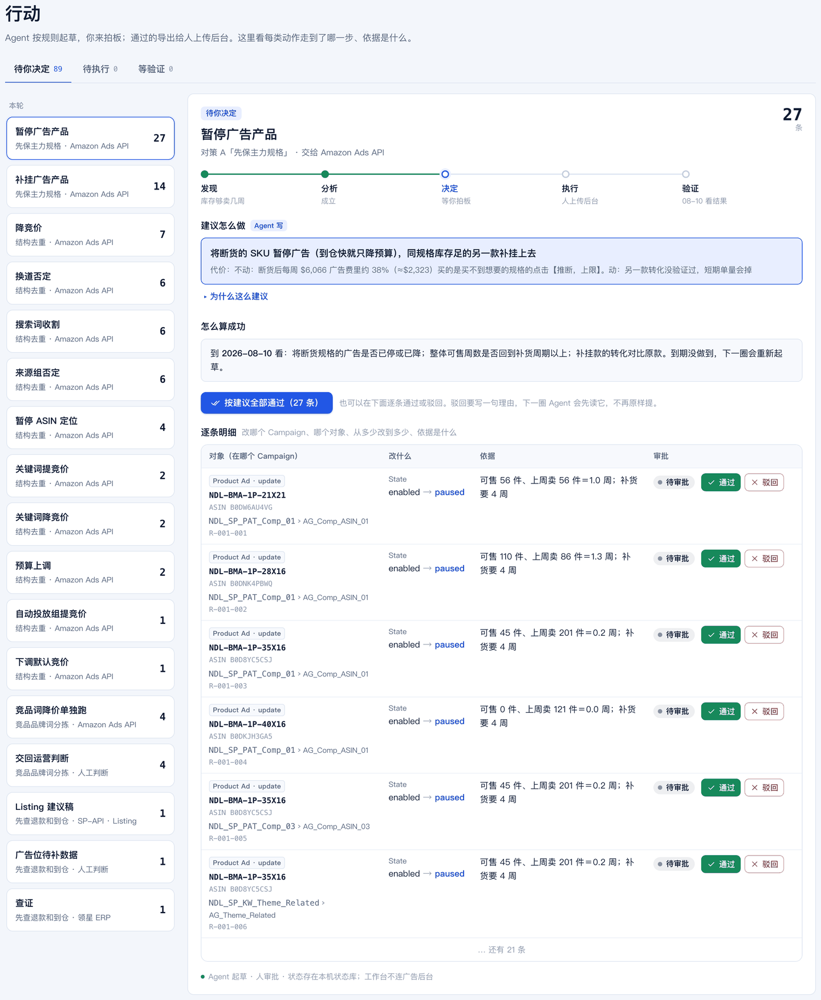
行动·待你决定：左边 17 类动作，右边是「暂停广告产品」27 条的详情。
1. 逐条明细第一行点「通过」：这一行从列表里消失，页签「待执行」的数字加 1。 2. 现在的第一行点「驳回」，什么都不填直接点「提交驳回」——被拦：「驳回必须填理由：下一轮 Agent 要读它」。填一句理由再提交，页签多出「已驳回 1」。 3. 点主按钮「按建议全部通过」：这一类剩下的全部通过，左边列表里它消失，右边自动换成下一类「补挂广告产品」。 4. 把顶栏身份切成「供应链」：所有审批按钮带上小锁；再点任何一个「通过」——弹层：「「点动作」这一步，供应链没有权限。能做的人：广告运营、老板」。切回「老板」。
应该看到页签变成「待你决定 62 · 待执行 26 · 已驳回 1」；首页待办多了一条「26 条已通过，等人上传广告后台」。人只在这里点头或摇头；权限写在系统里，不靠自觉。
卡住了
想反悔：到「待执行」或「已驳回」页签里点「撤回」「撤回驳回」。
全课关键体验：改一个目标，再跑一圈约 8 分钟
假设供应链刚告诉你：货一周就到。
7a. 回首页，点深色条右边的「改目标」，把「补货到仓还要」从 4 改成 1，点「保存目标」。 7b. 首页第一条变成「待重跑：目标或取舍改过了，还没重跑」。点它右边的「跑一圈」。
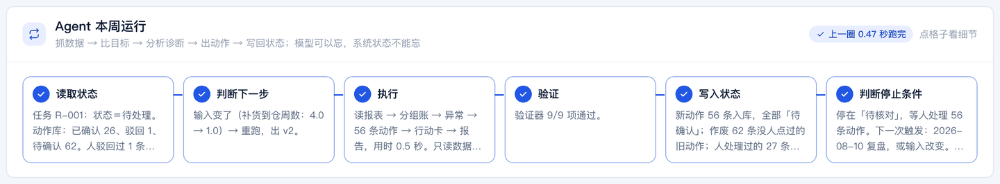
第二圈：第 1 格读回了你点过的（确认 26、驳回 1），第 2 格写明为什么重跑，第 5 格写明作废了多少、保留了多少、几条要复核。
应该看到① 读取状态：「人驳回过 1 条、确认过 26 条」；② 判断下一步：「输入变了（补货到仓周数：4.0 → 1.0）→ 重跑，出 v2」；⑤ 写入状态：「新动作 56 条入库；作废 62 条没人点过的旧动作；人处理过的 27 条原样保留；被驳回的 1 条不再提；26 条旧确认标了「请复核」」。
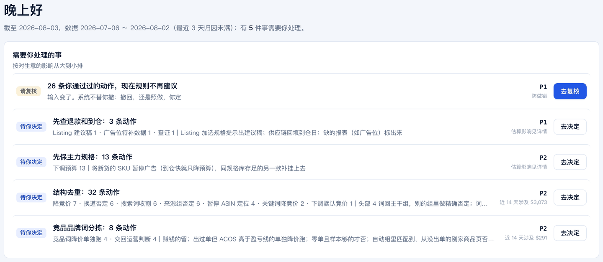
回到首页：最上面多了一条「请复核」——你通过过的 26 条，现在规则不再建议。
7c. 点「去复核」。
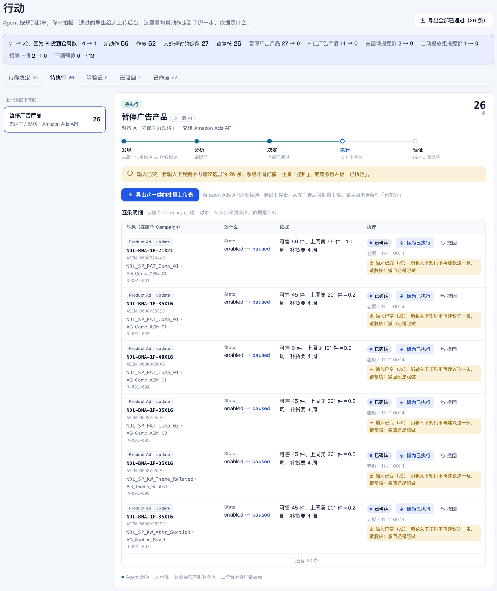
行动·待执行：顶上一条蓝色对比条写明 v1 → v2 变了什么；「暂停广告产品」26 条是上一版留下来的，带黄色提示。
应该看到货一周就到，不该停广告。对比条：暂停广告产品 27 → 0、补挂广告产品 14 → 0、下调预算 0 → 13。你通过过的那 26 条「暂停」，它不替你撤，只提示「撤回，还是照做」；没人点过的 62 条旧动作在「已作废」页签里。回「待你决定」，第一类变成了「下调预算」13 条。
打开 ~/ads-lab/工作台.db（SQLite），只读，不许改：告诉我 action 表里第 1 版和第 2 版各多少条、各是什么状态；我通过和驳回的那几条现在是什么状态、note 字段写了什么。
应该看到它用 sqlite3 或 python 查库，报出的数和页面一致。结论：输出跟着输入变；模型可以忘，系统状态不能忘。
卡住了
首页没出现「待重跑」：你没点「保存目标」。跑完第 2 格写「输入没变」：同样是没保存。
故意弄坏两次，看它会不会停约 3 分钟
8a. 首页点「改目标」，什么都不改，点「原样再触发」，再点「跑一圈」。
应该看到第 2 格：「输入和上一轮一模一样，结果已在库里 → 同一份输入不重复跑」；第 6 格：「停。状态改回「待核对」」。「Agent 运行」页的运行历史没有多出一行。
8b. 「改目标」里把「补货到仓还要」清空，「保存目标」，「跑一圈」。

缺输入：首页第一条变成红色「要你补」，写明缺什么；顶栏状态「遇到问题」。
应该看到「Agent 运行」页第 2 格变红：「缺输入：补货到仓周数 → 标「遇到问题」，不拿旧数据硬跑，上一份有效结果不动」；第 3、4、5 格根本没跑。「行动」里的动作一条没变。没有停止条件的自动化，不是员工，是事故。
8c. 点「去补」，把到仓周数填回 4，「保存目标」，「跑一圈」——会出 v3（输入又变了），「暂停」那一类回来了。
卡住了
8b 之后首页一直有「要你补」：正常，它在等人补输入；填回去再跑就消失。
执行、看活动、看它每周怎么转约 6 分钟
9a. 「行动」→「待执行」。选一类，点主按钮「导出这一类的批量上传表」，看下载的 CSV 表头；把其中一条点「标为已执行」。
应该看到批量上传表的列是广告后台认的：Product／Entity／Operation／Campaign ID／Ad Group ID／SKU／Keyword Text／Match Type／State／Bid／Daily Budget。标了「已执行」的那条进了「等验证」页签，首页多一条「1 条已执行，7 天后看结果」。上传广告后台这一步，永远是人做。
9b. 左侧点「广告活动」，再点第一行。
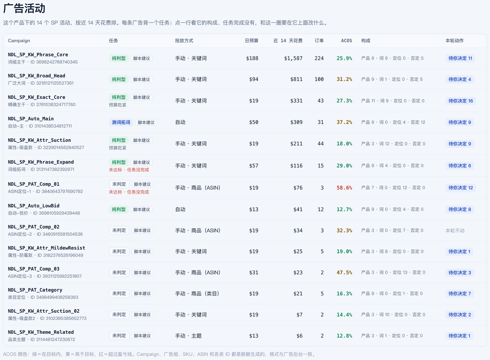
广告活动：14 个 SP 活动按近 14 天花费排；ACOS 绿＝在目标内，黄＝高于目标，红＝超过盈亏线。「任务」一列第三轮再讲。
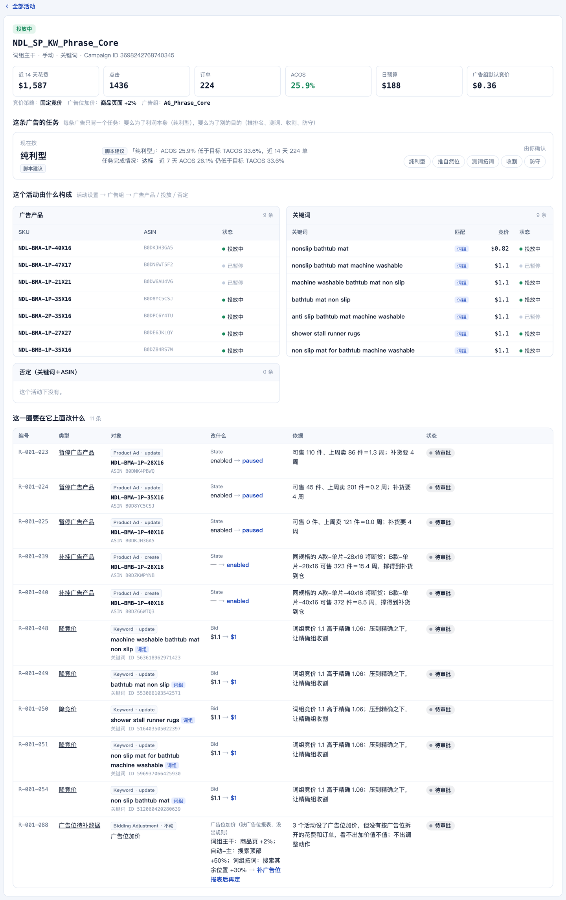
点进一个活动：它的设置、广告组、广告产品、关键词或商品定位、否定；最下面是这一圈要在它上面改什么。
应该看到一个活动由什么构成，一页看全：日预算、竞价策略、广告位加价、广告组默认竞价；挂了哪些 SKU、投了哪些词或哪些 ASIN、各自的竞价和状态。动作清单里每一条「改什么」，都能在这里找到它改的那个对象。
9c. 左侧点「Agent 运行」，往下看「持续运行：每周一跑一圈」，点第 2 圈、第 3 圈。
应该看到前三圈是模拟回放，第四圈是你刚跑的真实一圈，最右是下一圈什么时候醒。每张卡都写着「读回上一圈」的内容（执行后的新竞价、上圈驳回不再提、刚动过的观察一周）；不少动作下周「变差」——那是真实数据的波动，页面也写明了「当时没有真的执行，不代表动作效果」。这就是为什么每周都要复盘，而不是看一次就下结论。
读 ~/ads-lab/广告闭环/行动卡/ 里最新一张卡的第 9 格，把它改写成一张到期检查清单：哪天、看哪几个数、各自过线标准是多少、没过线说明什么。再看「Agent 运行」页的操作记录，用三句话说清这一圈谁做了什么。
应该看到一张 6–7 项的清单，每项有数、有线；三句话里有「上传后台是人做的」。
- 你能对着首页「本周广告数据」说出三个目标分别是谁给的、为什么是这个数 —— 立项卡
- 运行历史里至少有 v1、v2 两圈，第二圈是改了输入后跑的 —— 两轮产出
- 第 8 步那次「遇到问题」在操作记录里，上一份结果没被覆盖 —— 一条异常处理
- 至少一条驳回，理由是你写的，而且它在下一圈没有再提 —— 老板判断
- 你能说出行动卡第 9 格里下次什么时候跑、看哪几个数 —— 下次怎么触发
第二轮 · 换成你自己的产品（约 90 分钟，带了报表的学员做）
把自己的报表放进来约 15 分钟
放到 ~/ads-lab/我的数据/，表头照 我的数据-示例/ 抄，细节看 数据格式.md。真实数据只留在你自己电脑上。没带数据的学员：继续用示例，从第 14 步起只做「对 Codex 说」的部分。
| 文件 | 从哪来 | |
|---|---|---|
| 搜索词报告.csv | 广告后台 → 报告 → 创建报告：商品推广／搜索词／按天／最近 30 天以上，下载 CSV。英文表头不用改 | 必需 |
| 周度经营.csv | 手填，每行一周：件数、销售额（业务报告）；SP／SB／SBV 广告费（广告后台）；退款件；广告前毛利率 | 必需 |
| 库存.csv | 手填，每行一个 SKU：可售、上周销量（FBA 库存页、业务报告） | 必需 |
| 产品.json、参数.json、分组规则.json | 第 11、12 步做 | 必需 |
| 活动.csv／关键词竞价.csv／否定词.csv／广告产品.csv／退货.csv | 广告后台批量操作导出、广告产品报告、退货报告；没有就少几类动作 | 可选 |
| 广告组.csv／商品定位.csv／否定ASIN.csv，以及 活动.csv 里的竞价策略、广告位加价列 | 广告后台 → 批量操作 → 下载批量表；没有就出不了「改竞价策略」「下调默认竞价」「ASIN／类目定位调价」「否定 ASIN」，「广告活动」页里对应那一块会写「没给这张表」 | 可选 |
看一下 我的数据/ 里的文件：每个多少行、有哪些列；搜索词报告的时间从哪天到哪天、涉及几个广告活动。先别分析，也别改文件。
应该看到行数、列名、时间范围。先确认周期完整：至少 3 周，建议 4 周以上；最近 3 天归因没满，订单会偏少。
卡住了
近 4 周点击不到 300 次：换一个量大的产品。搜索词报告只有汇总没有按天：重新导一份「每日」的。
你亲手填：目标与约束约 10 分钟
必须人填。AI 看得到报表，看不到你为什么这么投。
一项一项问我，我答你记，写成 我的数据/参数.json 和 我的数据/产品.json（格式照 我的数据-示例/）：目标 ACOS 是多少；广告前毛利率（盈亏线）是多少；现在是新品期、成长期还是成熟期；补货到仓还要几周；哪个活动是精确、哪个是词组、哪个是广泛；品牌名；客单价。另外把我这个品的「不能动的」记一页纸：哪些词是防守词、哪些活动是有意为之。
应该看到两个 json 加一页纸，全是你的话。
卡住了
不知道盈亏线：售价减去采购、头程、佣金、FBA 费，再除以售价。分不清哪个活动是精确：看报表「匹配类型」一列，哪个活动全是精确匹配。
写你这个品类的分组规则约 20 分钟
每个品类做一次。示例的规则在 分组规则.json，五类词表都是正则，不许照抄——那是另一个品类的词。
照 ~/ads-lab/分组规则.json 的结构给我的品类做一份，存到 我的数据/分组规则.json。先把我搜索词报告里花费前 80 的搜索词读一遍，给我一份候选：哪些是核心大词、哪些是属性长尾、哪些是竞品品牌、哪些是跑偏（需求不同）、哪些是泛词（没有购买意图）。每一类列 10 个例子让我确认，我改完你再写正则。写完用前 80 个词试分一遍，把拿不准的 10 个列出来让我定。
应该看到它停下来让你定；试分后「拿不准的 10 个词」由你一条条判，判完它改规则再试。
卡住了
它想用示例的词表：叫停。它把没有购买意图的词也归进核心词：让它先解释 INTENT 这一类是干什么的，再改。
导入，起一个你自己的工作台约 10 分钟
用 python3 _脚本/import_my_data.py 我的数据 ~/ads-lab-mine 导入，把它打印的「列对应」「导入了多少」「窗口」原样念给我。然后用 python3 工作台/app.py --root ~/ads-lab-mine --port 8811 再起一个工作台，告诉我地址。示例那个 8810 不要关。
应该看到列对应表里八个必需列都对上了；周度经营几周、库存几个 SKU、可选表各多少条；窗口是报表最后 28 天。浏览器开 http://localhost:8811，看到的是你自己的店名和产品名，状态「待处理」。「设置」页的「数据从哪来」里，你给了的表是绿色「已有」。
卡住了
认不出列：按它打印出来的表头改列名（中文）再来。参数里的活动名不在报表里：照它列出的名字改，一个字都不能差。报「至少要 3 周」：回后台重导。
跑第一圈，先看大盘，再改规则约 10 分钟
在 8811 页面点「跑第一圈」。回到首页后先看「这周的结论」，再到「广告活动」页扫一遍每个活动的花费和 ACOS。
读 ~/ads-lab-mine/广告闭环/输出/数字.json，把三件事念给我听：分组账（每组花费、占比、ACOS）；同一个词被几个活动同时买的花费占比；头部四个词各花在哪些活动。然后打开 分组明细-近14天-请人工纠错.csv，把花费前 30 的词和它的分组列给我看，我来挑分错的。
应该看到你逐条判分错的词，让它改 我的数据/分组规则.json，重新导入到同一个目录，在首页「改目标」里点「原样再触发」再「跑一圈」：第 2 格写「输入变了（规则版本…）→ 重跑」。分组对了，结论和原因才可信。
卡住了
「原因」页最下面「分析时还缺的数据」很长：正常，可选表没给的部分它都会写成缺。
摆选项，你来选约 5 分钟
基于 ~/ads-lab-mine 这一轮的事实和我的目标与约束，给 3–5 个可选动作。每个写清：什么时候该选、代价折成钱是多少、可逆吗。不要替我选。
你口头选，并说一句为什么。到「原因」页的对策列，勾出你的取舍，点「按这个取舍重新生成」，首页会出现「待重跑」，点「跑一圈」。
应该看到第 2 格写「输入变了（取舍项…）」；「行动」里只剩你选的那几条对策的动作。
当一回运营，按通道导出约 10 分钟
在「行动」的「待你决定」里一类一类过：信得过的点「按建议全部通过」，拿不准的逐条看，驳回写理由。做完到「待执行」，点右上角「导出全部已通过」；Listing 建议稿和到仓日查证，各自在它那一类里导出清单。
打开我导出的批量上传表，按 Entity 分成三段念给我：Product Ad（SKU、State）、Keyword／Negative Keyword（Keyword Text、Match Type、Bid、State）、Campaign（Daily Budget）。核对每一行的 Campaign ID 和 Ad Group ID 都不为空；哪一行为空就标出来——那是我导入时缺了对应的表。
应该看到三段清单，ID 齐全。上传广告后台这一步，永远是人做：广告后台 → 批量操作 → 上传。传完回到「待执行」，把上传过的动作点「标为已执行」。
卡住了
清单里有一条你后来觉得不对：在「待执行」里点「撤回」，它就不会进下一次导出。
到日子，人来复盘约 10 分钟
这一步没有 AI 替你判断。到复盘日，首页会出现一条「到期看结果」：
1. 从后台重新导一份包含最近一周的搜索词报告，覆盖 我的数据/搜索词报告.csv；周度经营.csv 加一行；库存.csv 更新可售和上周销量。 2. 重新导入到同一个目录，首页「改目标」里点「原样再触发」→「跑一圈」。 3. 到「行动」的「等验证」，把结果对得上的动作点「下周已验证」。
应该看到第 1 格读回了你「已执行」的动作；第 2 格写「输入变了（数据窗口：…）→ 重跑」；首页的指标卡和结论换成新一周的数。每一类行动详情里「怎么算成功」写的那几样，你逐项对：到仓日、补挂款的转化、精确组占比、CPC、竞品词 ACOS。
把 ~/ads-lab-mine/广告闭环/行动卡/ 里上一张卡的第 9 格，和这一圈 输出/数字.json 里对应的数逐项对照，列成表：指标、当时说要看的线、现在的值、过没过。过不了的，先问是动作没执行、执行了没效、还是外部变了，分开写。
应该看到一张对照表。跑过两圈、第 9 格逐项对过、有验证结论的，才算数字员工。
第三轮 · 加上经营核算、技能包和 Agent（约 30 分钟，选做）
首页多出来的一张卡：先算账，再动手约 5 分钟
前两轮回答的是「哪里有问题、改什么」。这一轮往上走一层：这款到底能花多少广告费、现在卡在哪、往哪条路走。这张卡在首页「需要你处理的事」下面，数字全部由脚本算（_脚本/biz.py），不调模型。
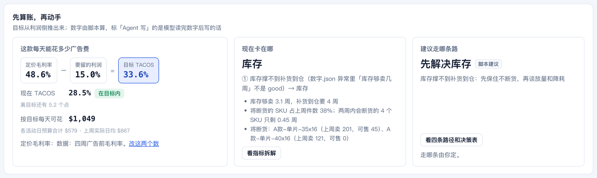
首页「先算账，再动手」：左边是目标 TACOS 怎么来的和每天能花多少，中间是现在卡在哪，右边是建议走哪条路。
应该看到演示数据：定价毛利率 48.6% − 要留的利润 15.0% ＝ 目标 TACOS 33.6%；现在 28.5%，「在目标内」，还有 5.2 个点的余量；按目标每天可花约 $1,049，而各活动日预算合计只有 $579。中间一栏写「库存」——钱还能花，但货不够卖到补货到仓，所以右边的建议是「先解决库存」。
点卡片左下角「改这两个数」，把「广告后要留的利润率」填成 25，保存。
应该看到提示「经营口径已保存，目标 TACOS 和单品预算已重算；动作不变」。目标 TACOS 变成 23.6%，判定变成「超出目标」。顶栏版本号没有变，89 条动作一条没动：经营口径只重算这张卡，不重出动作。看完把它清空再保存，回到默认。
读 ~/ads-lab/广告闭环/输出/经营.json 的「算账」，用三句话告诉我：目标 TACOS 是哪两个数相减得来的、这两个数各是谁定的、单品日预算是哪两个数相乘。再告诉我如果老板说「这款先留 20 个点利润」，目标 TACOS 和日预算各变成多少。只许用文件里的数算。
卡住了
卡片是一条黄色提示「经营核算这一圈没算出来」：照它写的原因补数据；其余结果不受影响。
原因 · 经营拆解：指标树、四条路径、决策表约 6 分钟
左侧点「原因」，默认就在「经营拆解」页签（另一个页签「问题连线」是第一轮看过的那棵树）。
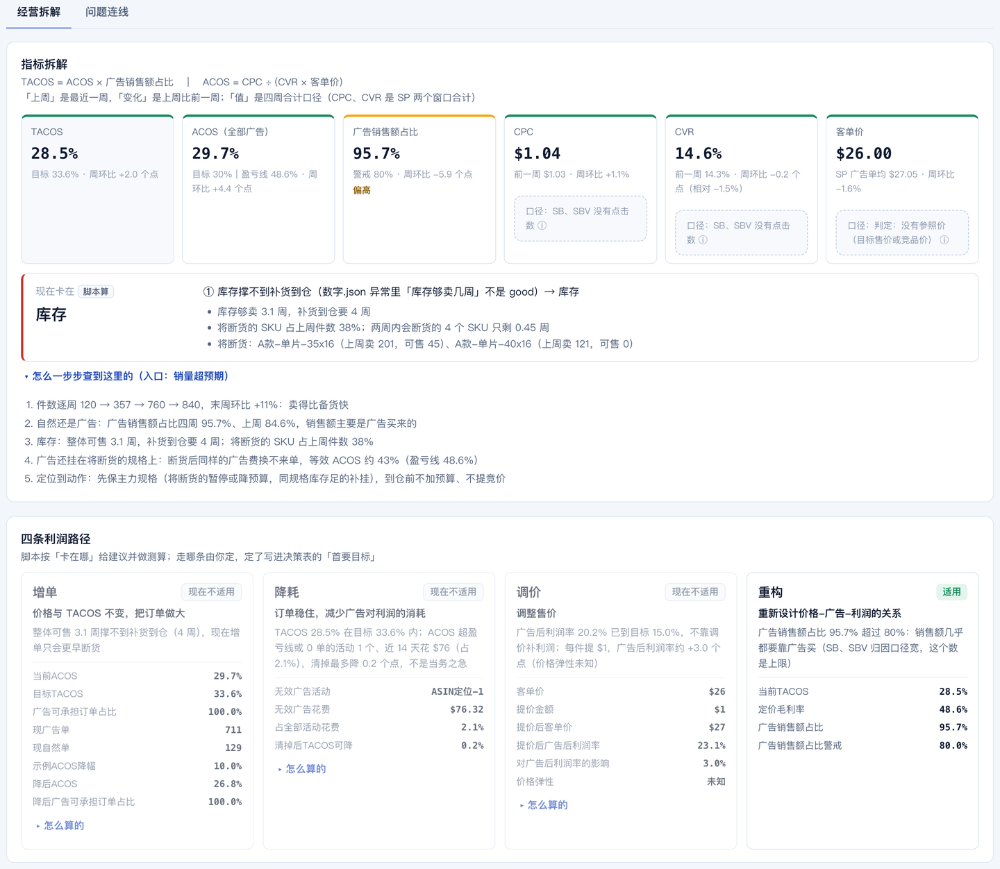
TACOS 拆成 ACOS × 广告销售额占比，ACOS 再拆成 CPC、CVR、客单价；下面红边的一条是脚本按固定顺序判出来的「卡在哪」，再往下是它一步步怎么查到的。
应该看到六个指标格子，偏高的那格上边是黄色。「现在卡在 库存」下面三条依据，每条都带数。再往下「四条利润路径」：增单、降耗、调价、重构，各有「适用／现在不适用」、理由和测算，点「怎么算的」能看口径。最下面是九栏决策表：左栏脚本按数字填，「首要目标」一栏标着「人定」。
读 经营.json 的「拆解」和「路径」。先告诉我脚本判「核心限制」的六条规则是按什么顺序判的、这次命中的是第几条；再告诉我四条路径里哪几条现在不适用、各自差在哪个数上。不要替我选路径。
应该看到它能说出判定顺序（库存 → 利润空间 → CPC／CVR → 广告销售额占比 → 无效广告 → 无明显限制），并且不替你选。
卡住了
想看到仓周数改成 1 以后这页变成什么：回首页改目标、跑一圈，「卡在哪」会变成「无明显限制」，建议变成「增单」。
广告活动：每条广告背什么任务约 5 分钟
同一个 ACOS，放在不同任务的广告上意思不一样：为了利润本身的广告（纯利型），ACOS 低于目标 TACOS 才算完成；为了推排名、测词、收割、防守的广告，要看它那个目的达没达到。任务由人确认，脚本和模型只给建议。
左侧点「广告活动」，看新增的「任务」一列；点「NDL_SP_KW_Exact_Core」（精确主干）那一行。
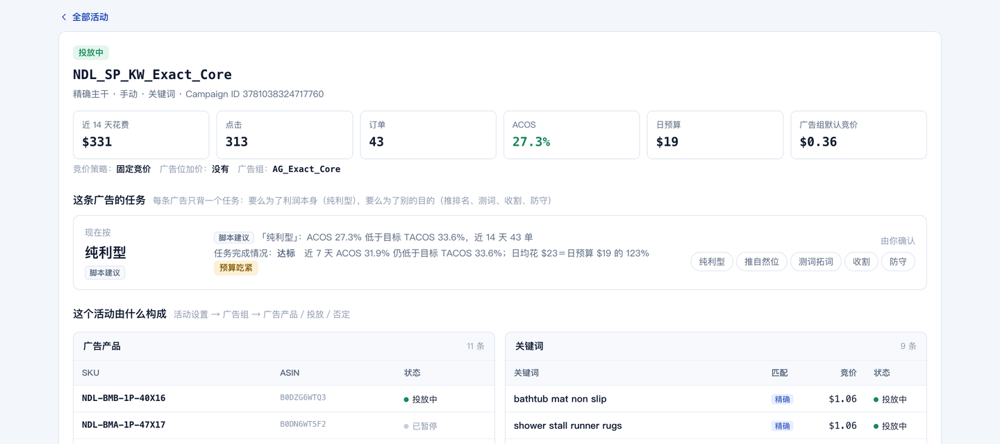
一个活动的任务：左边是现在按哪个任务算、谁定的，中间是脚本建议和完成情况，右边一排按钮由你确认。
应该看到列表里每个活动一个任务标签，旁边写着「脚本建议」；没完成的写红字「未达标」，预算快花完的写「预算吃紧」。点进去：脚本建议「纯利型」，依据是 ACOS 27.3% 低于目标 TACOS 33.6%、近 14 天 43 单。
点右边的「收割」。
应该看到左边变成「收割 · 人定」，下面是你的身份和时间；完成情况改成按「收割」来判（脚本只到活动层，写明还缺精确词各自的 ACOS 和自然排名）。操作记录里多一条「定任务」。点「撤回到建议」就回去。
把技能包装进你的 AI 工具约 6 分钟
技能包在 skills/：一个入口 ads-router 加九个专用技能。它告诉模型每一步读哪个文件、判断什么、不许做什么；数字还是脚本的。
在 ~/ads-lab 下执行 bash skills/install.sh --target codex --dry-run，把它说要拷的目录念给我；我说可以再去掉 --dry-run 真装。（用 Claude Code 的把 codex 换成 claude。）
应该看到它列出 11 个目录：十个 ads- 开头的技能和 ads-shared。真装以后，对它说下面这句：
用 ads-router：我这款现在最该管的一件事是什么？按「数据事实／规则判断／你的判断／还缺什么」四栏回答，每条建议说清为什么做、预期改变什么、多久复盘。
应该看到四栏分开；数字和页面上一致；它没有替你定目标，也没有说「已执行」。
卡住了
它开始自己算 ACOS：叫停，让它只读 数字.json 和 经营.json。它说找不到技能：重开一个会话再问。
让它每周自己跑，页面里能问它约 8 分钟
左侧「Agent 运行」→「每周自己跑」页签。
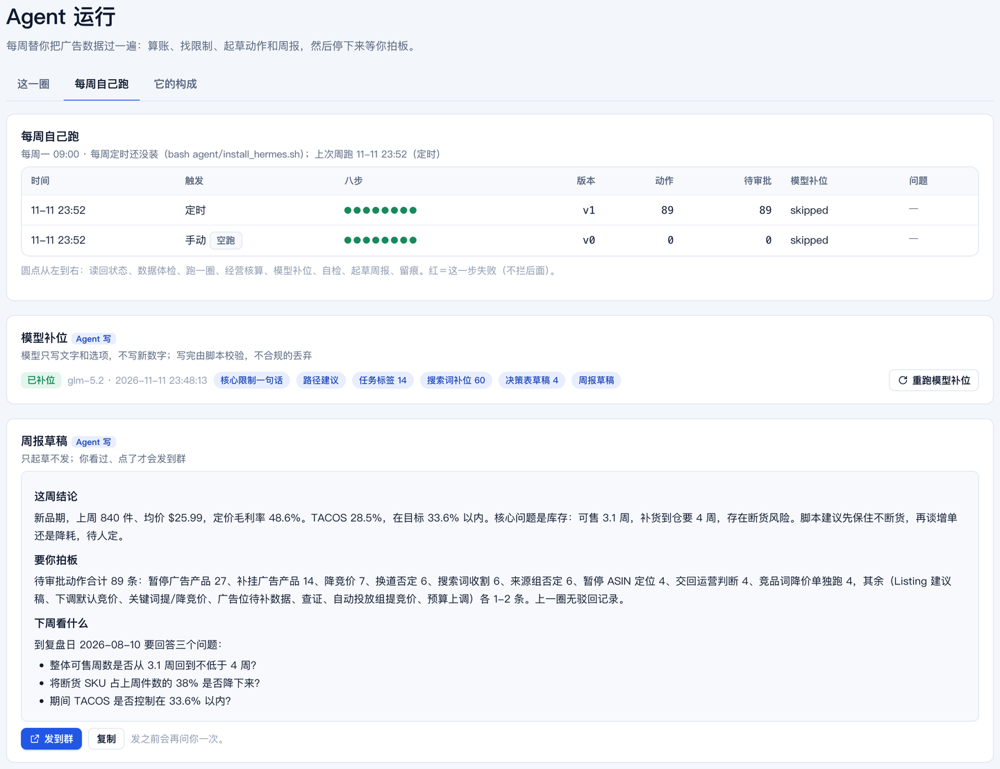
每周自己跑：每一行是一次周跑，八个圆点是八步；下面是模型补位的状态和周报草稿。
在 ~/ads-lab 下执行 python3 _脚本/weekly.py --dry-run，把八步各自那一句念给我。然后告诉我：这次有没有写状态库、有没有调模型、有没有往外发任何东西。
应该看到八步：读回状态、数据体检、跑一圈、经营核算、模型补位、自检、起草周报、留痕。空跑什么都不写、不调、不发，只在「运行记录」里留一行标着「空跑」的记录；刷新页面就能看到。
想让它真的每周一自己醒、页面里能问它（装了 Hermes 的学员做）：bash agent/install_hermes.sh --dry-run 先看它会做什么，再去掉 --dry-run。四步在 agent/README.md。没有 Hermes 也能在页面里问：启动工作台前设 ADS_LLM_BASE、ADS_LLM_KEY、ADS_LLM_MODEL 三个环境变量。
接通以后，点页面右下角「问 Agent」，点第一条建议的问题。
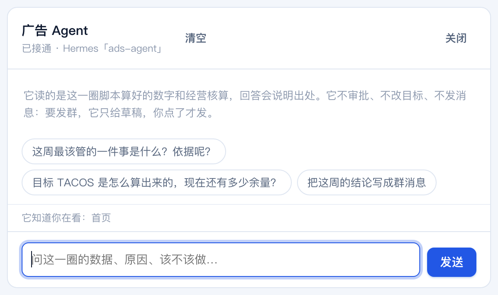
问 Agent 面板：顶上写着接没接通、走的是哪条路；中间是它的规矩和按当前页面给的三个问题；底下一行写着它知道你正在看哪一页。
应该看到它先说结论再给依据，数字和页面一致。让它「把这周的结论写成群消息」：出来的是一张草稿卡，下面写着「点了才会发」。它不审批、不改目标、不自己发消息。
最后看「Agent 运行」→「它的构成」。
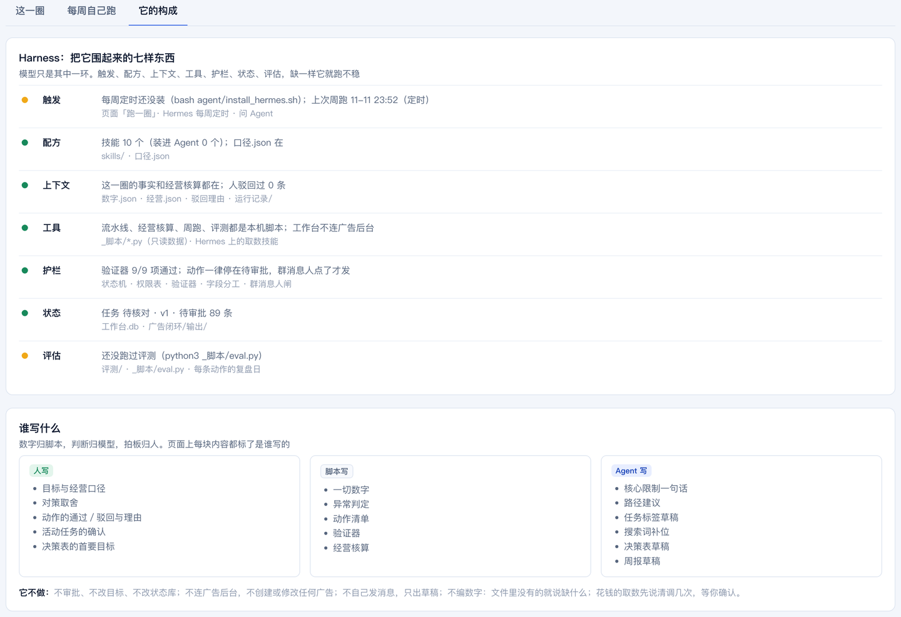
围住它的七样东西：触发、配方、上下文、工具、护栏、状态、评估，各自是不是就位；下面是人、脚本、Agent 各写什么。
应该看到绿点＝就位，黄点＝还差一步（旁边写着差什么，比如每周定时还没装、还没跑过评测）。模型只是其中一环；这七样齐了，它才跑得稳。
卡住了
面板顶上写「未接通」：到「设置 → Agent 接通状态」，红的那一项旁边写着怎么修。没接模型时，「模型补位」会写「没补位」，其余七步照常。
四条不许（Codex 犯了就叫停）
常见问题
| 现象 | 怎么办 |
|---|---|
| 页面打不开或空白 | 终端里那个进程是不是还在；不在就重新 python3 工作台/app.py。刷新一次。 |
| Address already in use | 端口被占，加 --port 8811。 |
| Operation not permitted | 仓库放在桌面或文稿下了，挪到 ~/ads-lab。 |
| 「跑一圈」按钮是灰的 | 上一圈还在跑；等一下。一直灰就刷新。 |
| 点通过没反应，提示没有权限 | 右上角「当前身份」不对：老板和广告运营能点动作，只有老板能改取舍和目标，供应链只能改到仓周数。 |
| 改了输入它没重跑 | 没点「保存目标」（首页不会出现「待重跑」）；或者第 2 格写了「输入没变」。 |
| 想回到刚开始的样子 | 「设置」页最下面的「重置工作台」。它删的是状态库（谁点过什么），不删数据文件。 |
| 演示数据和自己的数据想同时看 | 演示在 8810，自己的在 8811，两个进程各开各的。 |
| Codex 每条命令都要我批准 | 正常，点同意；嫌烦可以选「本次会话都允许」。 |
术语
| 词 | 意思 |
|---|---|
| ACOS | 广告花费 ÷ 广告带来的销售额。只看广告这一笔。 |
| TACOS | 广告花费 ÷ 总销售额（含自然单）。看广告占整个生意的比重。 |
| 盈亏线 | 广告前毛利率。ACOS 超过它，这一单就是亏的。 |
| 归因未满 | 亚马逊按点击后 7 天算订单，最近几天的订单还没记全，所以偏少。 |
| 同词多活动 | 同一个搜索词被三个以上活动同时买，自己跟自己抢流量。 |
| 换道否定 | 不是不要这个词，是在跑偏的那个活动里把它否掉，让它回到主干活动去跑。 |
| 可售周数 | 可售库存 ÷ 上周销量。小于补货到仓周数，就是要断货。 |
| 头部词 | 近 14 天花费最高的四个搜索词。 |
| 诊断树 | 异常 → 分析 → 对策 → 动作的连线；一个异常可以引出多个分析，一个对策可以综合多个分析。 |
| 执行通道 | 动作最终交给谁执行：Amazon Ads API、SP-API Listing、领星 ERP、人工判断。没接通的通道，导出批量上传表由人上传。 |
| 批量上传表 | 广告后台「批量操作」认的 CSV：Entity／Operation／Campaign ID／Ad Group ID／Keyword Text／Match Type／State／Bid／Daily Budget。 |
| 请复核 | 人确认过、但新输入下规则不再建议的动作；系统不替你撤，只标出来。 |
| 待确认 / 已确认 / 已执行 / 已验证 / 驳回 / 作废 | 动作的六种状态。Agent 只会生成「待确认」；后面每一步都是人点的；「作废」是输入变了之后，没人点过的旧动作自动退场。 |
文件地图
| 路径 | 是什么 |
|---|---|
| 工作台/app.py、工作台/index.html | 后端和页面。标准库加 SQLite，不联网。 |
| 工作台.db | 状态库：任务、动作、行动卡、运行、操作记录。「设置」里的「重置工作台」会删掉重建。 |
| _原始拉取/ | 报表和广告结构数据（演示版已脱敏并换了品类）。 |
| 参数.json、分组规则.json、显示映射.json | 三个输入和活动分工；你这个品类的五类词表；演示数据的脱敏名称和 ID（自己的数据没有这个文件，就显示原名）。 |
| 广告闭环/输出/ | 每一圈的产物：数字.json（所有事实和异常）、诊断-三栏表.md、选项.json、动作清单.csv／.json、验证器.json、分组明细-近14天-请人工纠错.csv、回测、各类调整表。 |
| 广告闭环/行动卡/ | 每一版的行动卡（九格）。 |
| 历史回放.json | 「Agent 运行」里前三圈的模拟回放，由 _脚本/history_sim.py 生成，页面只读。 |
| 运行报告-R-001.html、流程图/ | 单页报告、一圈 Loop 的流程图、项目架构图（「设置」页最下面有入口）。 |
| 数据格式.md、我的数据-示例/、_脚本/import_my_data.py | 第二轮：自己的数据怎么准备、模板、导入脚本。 |
| _脚本/pipeline.py、_脚本/render.py | 算数、规则、验证器；三栏表、行动卡、报告。 |
| _脚本/tree.py、_脚本/fields.py、_脚本/structure.py | 「原因」页的连线规则；动作翻成广告后台字段和批量上传表的列；一个活动由什么构成（「广告活动」页）。 |
| _脚本/biz.py、口径.json | 经营核算（算账、拆解、广告任务、利润路径、决策表）；全仓唯一的一份阈值。 |
| _脚本/weekly.py、_脚本/llm.py、_脚本/agent_run.py、装进Agent.md | 每周一圈（八步、留痕、可空跑）；模型补位（先校验再落盘）；老入口；定时触发怎么接。 |
| skills/、agent/、ads.config.json | 技能包（十个技能加共享口径）；Agent 的人设、岗位卡、定时脚本和一键安装；Agent 与每周节奏的配置（不放密钥）。 |
| 评测/、_脚本/eval.py、tests/ | 考卷和评分；单元测试。改了规则或换了模型，先跑一遍。 |
| 运行记录/ | 每次周跑的日志、runs.jsonl、周报草稿、发群留痕（不入库）。 |
| 学员材料/任务卡.md | 这一期要交什么、两轮 18 步、L1／L2／L3 验收。 |
| _脚本/shoot.py、_脚本/make_handbook.py | 重截手册截图；重新生成这份手册。 |
包的地址：github.com/WaytoAIC/ads-workbench · 示例数据是脱敏并替换过品类的演示数据，没有一个数是真实值